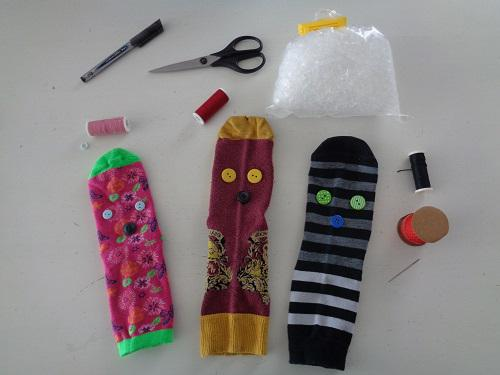
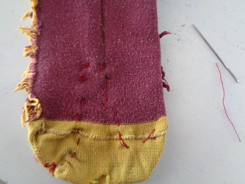
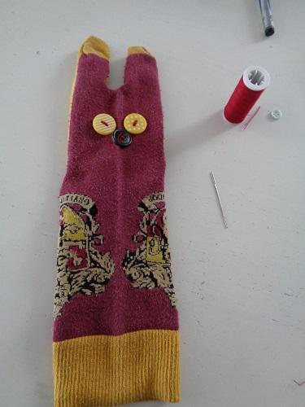
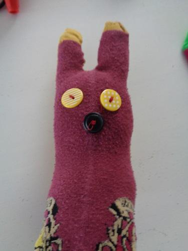
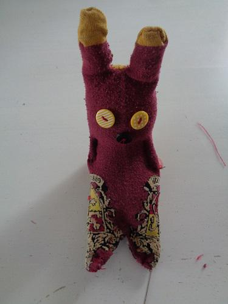
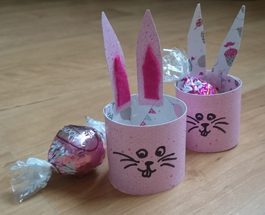

Ostern, nicht Weihnachten, ist das höchste Fest der Christenheit. Denn Weihnachten mit Jesu Geburt ist ja nur der Auftakt zur Erlösung der Menschen von der Geißel des Todes durch den Tod am Kreuz und die Auferstehung.
Es stellt sich für viele zuerst die Frage, warum Ostern nicht wie Weihnachten zu einem bestimmten Termin stattfindet. Nun, das Geburtsdatum wissen wir nicht genau, aber wann Jesu Kreuzestod erfolgte und wann er auferstanden ist, das ist vermerkt. Das geschah in der Pessach-Woche, in dem die Juden den Auszug aus Ägypten feiern und zwar in der Zeit vom 15. bis zum 22 Nisan. Die Schwierigkeit besteht darin, dass der jüdische Kalender kein reiner Solarkalender ist, sondern auch den Mond miteinbezieht – ein sogenannter Lunisolarkalender. Der Nisan schwankt also verglichen mit dem gregorianischen Kalender. Er fällt in die Zeit von Mitte Januar bis Mitte April.
In den meisten europäischen Sprachen wird auch bei der Bezeichnung des Osterfestes auf das Pessachfest Bezug genommen: Pâques heißt es im Französischen, Pasen in den Niederlanden und Pask im Schwedischen. Nur im Deutschen mit Ostern und im Englischen mit Easter gibt es eine andere Bezeichnung. Woher kommt die, fragt man sich? In Köln sprach man ja im fränkischen Reich noch von pasche. Aber die Germanen waren nicht so leicht zu überzeugen, es musste immer ein Anklang an ihre alte Welt und Götterwelt bestehen. Eostra stand bei Beda Venerabilis erstmals im Jahre 738. Man vermutet, das Wort stammt aus dem altgermanischen „Austro“, was Morgenröte bedeutet, da Jesu Grab in geöffnetem Zustand in dieser Tageszeit gefunden wurde. Man vermutet, dass Beda eher germanische Frühlingsriten aufgriff. Die Herkunft von einer Frühlingsgöttin Ostara ist umstritten.
Wie es im Christentum üblich war, gab es um die Regelung des Termins des Festes Mord und Totschlag. Anfangs wurde nach dem jüdischen Kalender oder willkürlich nach örtlicher Festlegung gefeiert. Im Jahre 325 wurde beim Konzil von Nicäa festgelegt, dass nach Frühlingsanfang, 21. März, das Osterfest ist. Es dauerte noch fünf Jahrhunderte, bis fixiert wurde, dass der Sonntag nach dem ersten Frühlingsvollmond der Ostertag ist. Danach richten sich alle christlichen beweglichen Feiertage. Natürlich ist bis heute nichts einheitlich, da die orthodoxe Kirche den gregorianischen Kalender nicht übernahm.
In den ersten Jahrhunderten wurden die Kinder nur zu Ostern getauft, was die Bedeutung dieses Festes noch steigerte. Schön in heutiger Zeit wäre, aber der Gott Mammon fordert seinen Tribut, dass bis ins 9. Jahrhundert eine zweiwöchige Arbeitsruhe galt, die später am Mittwoch nach Ostern endete. Ein trauriger Rest davon ist der Ostermontag als gesetzlicher Feiertag. Wichtig waren bei den Osterfeierlichkeiten die „Vigilien“, Nachtwachen. Hier wurde auf die Wiederkunft des Herrn gewartet.
All das fand in der Nacht von Karsamstag auf Ostersonntag statt. Das Fest endete mit der Ostervesper am Abend.
In der Liturgie entstanden die szenischen Darstellungen des Besuchs der Frauen am Grabe, die „Visitatio sepulchri“. Später kamen hinzu: Die Anbetung des Kreuzes am Karfreitag, die „Adoratio“, was Anbetung bedeutet, in der „Depositio“, Niederlegung, wurde das Kreuz in ein Tuch gehüllt und hingelegt und die „Elevatio“, die Auferstehungsfeier, fand unter Ausschluss der Gemeinde statt. Im Spätmittelalter kam die Verkündigung der Auferstehung durch Maria Magdalena an die Jünger und die Erscheinungsszene, in der Jesus sich den Jüngern zeigt. Beim Triester Konzil 1543 wurden fast alle diese schönen Sachen wieder abgeschafft, weil ja zu bunt und lebensvoll. Der Protestantismus hatte alles fad und streng gemacht.
Aber schon im 13. Jahrhundert waren die Passionsspiele entstanden, ein ganz Frühes befindet sich in den Carmina Burana, die nur teilweise unter der Regie der Kirche standen und später vorwiegend von Zünften und Städten veranstaltet wurden. Hier wechselten gesprochene Texte mit Gesängen. Wie der Name schon sagt, stand die Zeit bis zur Kreuzigung im Mittelpunkt. Passionsspiele gibt es in aller Welt, am bekanntesten sind aber wohl die in Oberammergau, die es seit 1634 gibt.
Natürlich gibt es auch viele Osterbräuche, die teilweise spät entstanden sind. Am bekanntesten sind wohl das Verstecken der Ostereier, der Osterhase und die Osterfeuer. Sehr früh entstand das Festessen am Ostersonntag. Es gab Palmsonntagsprozessionen, zum Gedenken an den Einritt Jesu in Jerusalem. Es gab auch die sogenannten „Finstermessen“, bei denen ab Karmittwoch bis einschließlich Karfreitag die Messe im Dunkeln ohne Glockengeläut abgehalten wurde. Zum Gottesdienst riefen – und rufen teilweise noch heute – Kinder mit Klappern und Ratschen. Recht neu und erst Anfang des 20. Jahrhunderts entstanden ist der Brauch des Osterbrunnens, wobei Brunnen festlich geschmückt werden – auch ein Symbol der Fruchtbarkeit.
Am bekanntesten sind wohl die Ostereier, die der Osterhase bringt. Eier wurden schon in ältesten Zeiten dekoriert und bemalt. Das Ei ist nicht nur ein Symbol der Fruchtbarkeit, sondern auch der Auferstehung. Ab dem 12. Jahrhundert gibt es in der Kirche die Eiersegnung. Das Färben der Eier gibt es seit dem 13. Jahrhundert und war kein Kinderspiel. Aber als solches tauchte es erstmals im Jahre 1691 in einer Urkunde auf. Es ist weltweit verbreitet.
Der Osterhase ist jünger. Der Hase war auch ein christliches Symbol. Aber dass der Hase die Eier legt – was ja nun allgemein bekannt ist – wurde erst durch Georg Franck von Franckenau bekannt, der im Jahr 1682 die Abhandlung „De ovis paschalibus – von Oster-Eyern“ verfasste. Irrtümlicherweise tat er das als falsch ab. Heute gibt es den Osterhasen in vielen Ländern. In Westfalen gab es den Eierfuchs, der ja so gar keine Eier legt im Gegensatz zum Osterhasen. In Thüringen brachte der Storch die Eier in der Schweiz der Kuckuck. In Tschechien legte sie der Hahn, aber daraus entstehen ja bekanntlich Basilisken.
Aus Bestandteilen der christlichen Liturgie entstand das Osterfeuer, das an verschiedenen Tagen der Karwoche und des Osterfestes am Abend entzündet wird.
Ich wünsche allen Zauberschülern hier ein FROHES OSTERFEST, mit vielen Eiern, Hasen und Leckereien.
Ostern naht, die Kinder freuen sich auf Ostereier.
Ist jedes Jahr dasselbe Stück zur Frühlingszeit.
Wie die „coolen“ Teens so sagen, immer die gleiche Leier.
Doch Opa und Oma machen sich für die Kleinen bereit.
Oma färbt die Eier, schrubbt, putzt und backt.
Opa ist auch fleißig, isst Schokolade und trinkt Bier,
aber er hat auch vorher die Osterpakete verpackt
und freut sich, bald sind die Enkel hier.
Klaus und Bärbel werden vier und können mal woanders sein,
die Eltern fliegen in den Süden, freuen sich auf freie Tage.
Klaus und Bärbel werden weggebracht, denn sie sind ja nicht mehr klein,
Oma und Opa bereiten alles für den Hasen vor, keine Frage!
Die Sonne scheint, Kinder toben laut durch Haus und Garten,
sie hörten nämlich wohl nie vom Osterhasen und den Eiern.
Noch nie hörten sie diese wunderschöne Geschichte! Und sie warten!
Denn sie wollen mal dieses Fest so richtig mit Eier und Hase feiern.
Denn aus dem Laden kamen bisher bunte Eier nach Haus‘,
Heitmanns Eierfarben und selber machen waren neu und gut!
Sie kannten nur Schokolade, Eier und den Festtagsschmaus.
Und Osterhase und Selbermachen sind für Kinder eins, ganz ohne Mut.
Am Samstag wurde gekocht, gefärbt und rumgekleckert,
Der Tag des Hasen naht und Kinderaugen leuchten.
Bei Flecken, kaputten Sachen wurd‘ auch nicht gleich gemeckert,
denn wozu gibt es Schäufelchen und den Lappen, den feuchten.
In der Früh eilen die Alten heimlich in den Garten hinaus,
wo wie immer Kaninchen hoppelten und grasten.
Und sie verstecken sorgsam im Grün die Gaben für Bärbel und Klaus,
und auch Schokolade und Süßzeug, Ostern ist nicht zum Fasten!
Bald schon eilen die Kinder in den sonnigen Garten,
Die Kinder suchen und jauchzten dabei und eilen
und die Großeltern gingen hinein, sie konnten vor Freude kaum warten.
Die Sonne schien, während die Eltern im Regen von Malle verweilten.
Die Körbchen voll eilen sie zu Oma und Opa hinein,
die bei Kaffee und Bier am Tische sitzen.
Ein Körbchen mit Eiern schön und bunt,
das andere mit Hasenkötteln, kein Wunder dass sie schwitzen.
Die Eier waren alle gefunden und werden bestaunt,
„Aber von den ganz Kleinen haben wir einiges schon gegessen, mehr als acht“,
wird einzeln von den Kindern in die Ohren geraunt.
Die Oma weint erst, doch lacht mit, als Opa lacht.
„Ist ja auch gewissermaßen vegetarisch und gesund,
denn so ein Hasentier legt nicht nur zweierlei Eier.“
Lacht der Opa und gab es munter und fröhlich kund,
die Kinder störte es nicht und auch nicht die Feier.
Ottilie Zucker konnte kaum schlafen, denn morgen am 12.4. 2030 sollte der große Zauberbackwettbewerb stattfinden. Obwohl sie schon viele Stunden geübt hatte, war ihr doch vor Aufregung etwas mulmig zu Mute. Schließlich sollte es der erste offizielle Zauberbackwettbewerb seit der schon fast märchenhaften Überwindung der Ausnahme von Lebensmitteln in Gamps Gesetz der elementaren Transfiguration sein.
Das war damals im Jahre 2016 schon eine sehr unerwartete Entdeckung, der wie so oft ein Zufall zugrunde lag. Ottilie wurde ganz warm ums Herz, als sie an diesen besonderen Tag zurückdachte.
Damals wütete in vielen Ländern Europas die Vogelgrippe und forderte leider auch ihre Opfer. Alle Versuche sie einzudämmen schlugen fehl. Es half nur strenge Isolation der Nutzvögel und eine drastische Reduzierung des Bestandes, um wenigstens einige Tiere zu retten. Dummerweise führte dies ausgerechnet in der Osterzeit zu einem gewaltigen Eierengpass. Die Behörden sahen sich sowohl in der Muggel- als auch in der Zaubererwelt gezwungen, eine Zuteilung genau nach Menge der Familienmitglieder festzulegen.
Manchen Familien machte dies nicht so viel aus, aber in Ottilies Familie gab es doch die schöne Tradition mit allen Kindern so viele Eier zu bemalen, wie sie insgesamt alt waren.
Alle Kinder der Großfamilie zusammen ergab genau eine Summe von 112 Eiern. Obwohl alle Tanten, Onkel, Mütter, Väter und Großeltern ihre Eier mitbrachten, es reichte nicht einmal für die Osterkuchen.
Dafür wurde schnell eine Lösung gefunden, Tante Trudi hatte in der Muggelwelt ein veganes Backbuch erstanden, aber das Ostereieranmalen konnte nicht stattfinden. Natürlich versuchten die Erwachsenen den Kindern zu erklären, dass es doch auch Spaß macht, wenn jeder nur drei statt z.B. zehn Eier anmalt.
Aber die Kleinen waren untröstlich. Peter war besonders traurig, schließlich war er doch gerade vier geworden, warum sollte er also nur drei Eier wie seine kleine Schwester anmalen? Ottilie, Peters Lieblingstante, sah die dicken Tränen und dachte angestrengt über eine andere Lösung nach. Weil ihr vom vielen grübeln schon der Kopf wehtat, ging sie in den Garten, um etwas frische Luft zu schnappen.
Dort setzte sie sich auf eine Gartenbank und genoss den Blick in ein Beet mit vielen Frühjahrsblühern. Als Dekoration waren zwischen den Blumen auch Tonfiguren. Es gab Osterhasen und Küken, Hähne und auch ein paar Nester mit Toneiern drin.
Da kam Ottilie die rettende Idee. Sie könnten doch mit den Kindern Ton- oder Steineier anmalen. Die kleinen Kunstwerke könnte man dann im Garten ausstellen. Jedes Kind hatte ja zu Hause ein Beet, dort könnten sie es sich immer anschauen und vielleicht jedes Jahr ein Ei dazu legen.
Als Ottilie diesen Vorschlag machte, da waren alle ganz begeistert, bis den Erwachsenen auffiel, dass es ja gerade Sonntag war. Wo also 112 Ton- oder Steineier herbekommen, ohne sie zu stehlen. Onkel Wigbald meinte, vielleicht könnte man ja aus einem Steinbruch in der Nähe ein paar Eier aus dem Stein herauszaubermetzen. Weil er in der Familie die größten Zauberkräfte und die nötige Vorstellungskraft hatte, sollte er es mal versuchen.
Also begann Wigbald sich zu überlegen, wie ein entsprechender Zauber wohl heißen könnte. Dabei kam ihm seine Erfahrung auf dem Gebiet der experimentellen Zauberei sehr zu Gute.
Er verwob einen Sammelzauber mit einem Bearbeitungszauber und versuchte aus Sicherheitsgründen im Garten sein Glück.
Tatsächlich erschien so etwas Ähnliches wie ein Ei. Mit jedem Versuch klappte es besser. Als die anderen Familienmitglieder dies sahen, wollten sie es auch mal versuchen. Jeder übte fleißig und bald hatten sie einen großen Berg verschiedener eierähnlicher Brocken. Ottilie gelang es am besten. Ihre Eier waren die schönsten. Stolz gab sie jedem Kind eins und gleich ging das lustige Bemalen los.
Als die kleine Chiara ihr Ei stolz der Mama zeigen wollte, passierte das Unmögliche. Das Ei rutschte ihr aus der Hand und zerbrach. Dabei kam ein ganz normales flüssiges Eiweiß mit eingebettetem Eigelb zum Vorschein. Erstaunt schauten alle Ottilie an, die sprachlos auf die Bescherung sah. Sofort redeten alle durcheinander. Opa Rupert rief endlich Ruhe und fragte, was alle dachten. „Warum hast du einfach einer anderen Familie die Eier weggehext?“ Ottilie erstarrte und versuchte zu erklären, dass sie dies nicht getan hätte. Aber keiner wollte ihr glauben. Selbst der kleine Peter sagte, „Mama sagt, man kann kein Essen aus was Anderem zaubern, außer aus Lebensmitteln. Hast du die Eier aus den Ställen gehext?“
„Nein!“ sagte Ottilie etwas beleidigt. „Ich habe Onkel Wigbalds Spruch angewendet!“ Sofort liefen die Kinder in den Garten und versuchten die anderen Eiersteine zu knacken. Alle waren aus Stein. Als aber Peter es mit seinem bemalten Ei von Ottilie versuchte, da war es wieder ein echtes Ei, das eine Schale mit Steinmuster hatte. Manche von Ottilies Eiern konnte man knacken, manche nicht.
Als nun Ottilie genau erklären musste, wie sie gehext hatte, da fiel ihr ein, dass sie bei manchen Eiern an echte gedacht hatte. Diese Steineier brauchten besonders viel Energie. Das hatte sie schon gewundert, weil sonst Zauber nicht schwanken im Kraftverbrauch.
Sofort rief die Familie einen Vertreter des Zaubereiministeriums. Dieser begann eine offizielle Untersuchung dieses unmöglichen Vorfalls. Ottilie wurde mehrmals auch mit Veritaserum befragt. Nachforschungen wurden angestellt, ob irgendwo Eier verschwunden waren und natürlich wurde Ottilies Zauberstab gründlich analysiert. Als es keine andere Erklärung mehr gab, als das Ottilie es geschafft hatte, die Ausnahme von Gamps Gesetz zu umgehen, musste sie mit der Abteilung für experimentelle Magie zusammenarbeiten.
Jetzt, viele Jahre später, war klar, dass es schon einige wichtige Grundvoraussetzungen für Lebensmittelerschaffungen geben muss. Es kann nur klappen, wenn der Ausgangsstoff etwas Ähnlichkeit mit dem gewünschten Ergebnis hat. So wurden die Eier nur etwas, weil der Steinbruch aus Kalkstein bestand, der auch noch fast weiß wie eine Eierschale war. Außerdem musste die Hexe oder der Zauberer über große magische Kräfte und eine große Konzentrationskraft verfügen. Man darf sich beim Lebensmittelhexen nicht ablenken lassen, sonst können gefährliche Nebenprodukte entstehen. Glücklicherweise gibt es ja einen Unverträglichkeitserkennungszauber.
Noch sind bestimmt nicht alle erhexbaren Lebensmittel gefunden, aber um einen Kuchen zu backen reicht es. Daher soll nun der große Zauberbackwettbewerb, der Zaubererschaft die Nützlichkeit dieser Zauberart verdeutlichen. Natürlich ist es im Bereich der Fortgeschrittenen Magie anzusiedeln, aber mit etwas Übung kann es eine Lösung für viele Probleme der Menschheit werden.
Ottilie legte sich ins Bett und freute sich, dass ihre Entdeckung von nun an immer das Petersche Gesetz heißen würde. Hoffentlich gefiel Peter morgen der extra für ihn designte Osterzauberkuchen. Auch wenn er nun schon lange erwachsen war, seine Schwäche für Backwerk hatte er zum Glück bis heute nicht verloren.
Wenn du auch jemanden mit einem Kuchen verzaubern möchtest, versuche es doch einmal mit folgendem Rezept für einen Schäfchenkuchen:
Du brauchst:
Und so verwandelst du die Zutaten in einen leckeren Kuchen:
Für einen Sockenhasen braucht man eine Socke, Füllmaterial, Nadel und Faden, Schere, Knöpfe für Augen und Nase und Verzierungen nach Wunsch. 
Zuerst wird der Sockenfuß als Ohren abgenäht und der übrige Rest abgeschnitten. 
Danach werden die Knopfaugen und die Nase aufgenäht. Dabei darf man nur durch die Vorderseite der Socke nähen! 
Nun kann der Hase zur Hälfte gefüllt werden. 
Genau wie bei den Ohren werden nun unten die Beine genäht, doch bevor das zweite Bein zugenäht wird, muss der Hase so prall gefüllt werden, wie man mag. Mit ein paar Stichen kann man die Arme an der Seite abnähen oder Bänder oder Blumen am Ohr usw. befestigen. Fertig! 
Es war ein sonniger, klarer Morgen und der kleine Nicholas war auf dem Weg zu einem nahgelegenen Flüsschen, um angeln zu gehen. Seine Mutter hatte ihn früh losgeschickt, um wenn möglich eine Forelle oder einen Lachs für das jährliche Karfreitagsmenü zu fangen. Bisher hatte dies immer sein Vater gemacht und Nicholas durfte ihn ab und zu begleiten. Inzwischen war Nicholas mit seinen acht Jahren nach Empfinden seiner Eltern alt genug um diese Aufgabe zu übernehmen und er war sehr stolz darauf. Er hofft seine Mutter nicht nur mit einer, sondern gleich drei Forellen überraschen zu können - für jedes Familienmitglied eine eigene. Nicholas hoffte auf das leckere Rezept aus dem letzten Jahr.
-----Forellen-Pfannkuchenröllchen mit Bärlauch:
Zutaten: (für 3 Portionen)
- 150 g Forellenfilet (geräuchert)
- 1 Bund Bärlauch
- 100 g Schmand, Saure Sahne oder 0,1% Frischkäse
- 1/4 Zitrone
- 1 1/2 Eier
- 1 1/2 EL Mehl
- 4 1/2 EL Milch
- Salz
- Pfeffer
Zubereitung:
Die geräucherten Forellenfilets mit der Gabel fein zerdrücken, das Bund Bärlauch säubern ganz fein hacken, wahlweise mit dem Schmand, der sauren Sahne oder dem 0,1% Frischkäse vermengen. Mit dem Saft der Zitrone, Salz und Pfeffer abschmecken.
Aus den Eiern, dem Mehl und der Milch einen Pfannekuchenteig rühren und dünne Pfannkuchen ausbacken. Abkühlen lassen, mit der Forellencreme bestreichen, aufrollen und (am besten über Nacht) in den Kühlschrank stellen. Mit einem scharfen Messer ca. 2 cm starke Stücke von den Rollen abschneiden.
Nicholas lächelte heimlich und verträumt vor sich hin und kratzte sich an seinem langen Bart. Die Erinnerungen an früher fielen ihm immer schwer - es waren inzwischen schließlich auch mehrere Jahrhunderte vergangen - und er war froh, dass sein alter Freund Albus Dumbledore ihm sein Denkarium zur Verfügung gestellt hatte. Sein Leben war lang und erfüllt gewesen, mit einer wunderbaren Frau und einer erfüllenden Lebensaufgabe. Doch mit der Zerstörung des Stein der Weisen wurde Nicholas langsam melancholisch und wollte sich an längst vergessene Tage erinnern. Er kippte die nächste Erinnerung ins Denkarium und tauchte ab.
Nicholas blickte sich am Tisch um und hielt Ausschau nach dem jungen Mädchen mit den rötlichen langen Haaren, das ihm in der letzten Zeit immer wieder aufgefallen war. Er konnte sie aber zunächst nicht entdecken. Am heutigen Osterfest ging es deutlich turbulenter und lauter in der Beauxbatons-Akademie zu als sonst. Vielen Schülern war das durchgängige Fasten eindeutig aufs Gemüt geschlagen und nun, da sie wieder schlemmen konnten wie bisher, war die Stimmung gelöster und fröhlicher als in den vergangenen Tagen. Auch Nicholas freute sich auf das leckere Festmahl, obwohl er von Zuhause das Fasten bereits kannte und nicht ansatzweise so mürrisch wie sein Freund Gustav war. Plötzlich tauchte das rotblonde Mädchen in der Tür auf. Nicholas setzte sich unbewusst aufrechter hin, strich sich die Haare aus der Stirn und blickte schüchtern in ihre Richtung. Sie war in ein Gespräch mit einer Freundin vertieft und blickte plötzlich auf, als wenn sie Nicolas Blick gespürt hätte. Sie lächelte und winkte kurz. Nicholas bekam einen roten Kopf, aber lächelte scheu zurück. In seinem Kopf überschlugen sich die Gedanken.
In Gedanken versunken trat Nicholas Flamel aus dem Denkarium und blickte auf das Bild seiner Frau an der Wand. Wie die Zeit verflogen war! Er hatte ihre jungen Jahre, wo sie sich gerade erst kennengerlernt hatten, beinahe schon vergessen. Dabei waren es so unbeschreibliche Momente gewesen voller Magie und Zauber, die er sich als damals 13-jähriger Junge gar nicht bewusst war. Wie eng das Band mit seiner Frau im Laufe der Jahre geworden war, wie tief sie miteinander verbunden waren. Er wusste er hatte seine Seelenverwandte bereits in jungen Jahren gefunden und sie auch seitdem an seiner Seite gehabt. Nicholas war bewusst, dass dies ein unfassbares Glück gewesen war und wie glücklich er sich schätzen konnte. Er durchstreifte noch einmal in Gedanken diese letzte Erinnerung ehe er sich der letzten Erinnerung widmete, die er sich unbedingt noch ansehen wollte.
Zusammen mit seinem Freund Albus Dumbledore befand sich Nicholas in seinem Labor in Devon. Gemeinsam experimentierten und fachsimpelten sie über den genauen Aufbau von Materie. Beide waren derart in ihre Arbeit und ihre Diskussionen vertieft, dass sie gar nicht merkten wie die Sonne unterging und die Nacht heranbrach. Der Gegenwarts-Nicholas schaute sich in seiner Werkstatt um und blickte voller Stolz auf alle seine Apparaturen, Gefäße und Behältnisse. Plötzlich wurde er aus seiner Betrachtung gerissen und wusste zuerst nicht wieso. Doch als er sich umblickte konnte er die strahlenden Gesichter von seinem jüngeren Ich und das Gesicht von Albus Dumbledore sehen. Und dann sagte sein Freund etwas, wegen er wieder wusste, warum er diese Erinnerung hatte ansehen wollen. "Nicholas, mein Freund, wir haben geschafft, was so viele vor uns versucht haben. Wir sind nicht gescheitert, unzählige Stunden haben wir hier zusammen verbracht, diskutiert und getestet, so oft gescheitert, dass ich es gar nicht mehr zählen kann. Aber dieser eine Moment jetzt gerade, der war es wert. Sicher wird werden mit dieser Erkenntnis die Welt verändern, aber was mir viel wichtiger ist, dass ist deine Unterstützung, die Zusammenarbeit mit dir, die Freundschaft und das Teilen gleicher Werte. Danke dafür!" Und plötzlich standen beiden Männern die Tränen in den Augen und sie lagen sich halb lachend, halb weinend in den Armen.
Nach dieser Erinnerung saß Nicholas noch lange in seinem Sessel neben dem Kamin, schaute aus dem Fenster und ließ die vergangenen Tage, Monate und Jahre Revue passieren. Was hatte er alles in seinem Leben erlebt?! Kriege, Hungersnöte, Folter und Tod, aber auch den Fortschritt, Veränderungen und Entwicklungen. Manchmal hatte er vergessen, wie kostbar die kleinen, persönlichen Erinnerungen waren, die ihn zu dem Menschen gemacht hatten, der er heute war.
Cäcilia Wenzel war fünf Jahre alt, als sie ihr erstes Osternest selbst bastelte. Sie nahm kleine Stöcke und verbog sie so ineinander, dass ein dicker runder Korb entstand. Sie legte Moos hinein und stellte das Nest auf den Schrank. Der „Osterhase“ würde es schon finden und sicher viele schöne Dinge hineinlegen.
Was Cäcilia gar nicht mochte, waren die Kirchgänge an den Ostertagen. Sie hasste die neuen Kleider und die Schuhe, die immer drückten. Ihre Mutter ermahnte sie dauernd, nicht herum zu toben und auf die Sachen aufzupassen. Auch das lange Sitzen auf der harten Kirchenbank gefiel ihr nicht. Aber da waren ihre Eltern unerbittlich. Für sie waren diese religiösen Rituale wichtig und es bedeutete ihnen sehr viel, dass die ganze Familie daran teilnahm.
Am Ostermorgen sprang Cäcilia schon früh aus dem Bett. Auf nackten Sohlen lief sie im Haus herum, um nach dem versteckten Nest zu suchen. Sie konnte es aber nirgends finden. Auf einmal bemerkte sie, wie ihr Vater mit dem Kopf leicht in Richtung Garten deutete. Schnell rannte sie hinaus und sah sich um. Hinter einem Busch blitzte etwas Rotes hervor. Sie hatte ihr Osternest gefunden. Staunend schaute sie auf die Schokolade, die bunten Eier und die kleinen Glaskugeln, die im Nest lagen. Die Eier waren schön gefärbt und nun wusste Cäcilia auch, warum ihre Mutter am Vorabend noch Eier mit Roter Beete, Zwiebelschalen und Tee im Wasser gekocht hatte.
Nachdem sie ihre kleinen Geschenke bewundert hatte, freute sich Cäcilia auf den frischgebackenen Osterzopf.
Die Jahre gingen ins Land und Cäcilia Wenzel war inzwischen 87 Jahre alt. Es war Ostersonntag und sie saß mit ihrer Tochter, ihrem Schwiegersohn und den drei Enkelkindern in ihrem Garten auf der Terrasse. Das Wetter war herrlich. Einer dieser wunderschönen, sonnigen Tage, die so selten im April waren. Bei fast 18 Grad tranken sie ihren ersten Kaffee im Freien und genossen den Osterzopf, der auf der Mitte des Gartentisches stand.
Magda, Amelie und Jona konnten es nicht erwarten, im Garten nach ihren Osternestern zu suchen. Ein freudiger Schrei war zu hören und Jona lief aufgeregt mit seinem großen Korb zu seinen Eltern. Ein Malset und ein Kuscheltier fielen dabei aus dem Korb und landeten im Gras. „Dass die Kinder heutzutage so viele Geschenke bekommen“, sagte Cäcilia vorwurfsvoll zu ihrer Tochter. „Mutter! Das sind nur Kleinigkeiten. Nichts Bewegendes.“ Ihre Tochter verdrehte die Augen und wandte sich ihrem Sohn zu. Aber ihre Mutter ließ nicht locker – wie jedes Jahr. „Und überhaupt, wieder gehen wir nicht in die Kirche. Ostern ist ein religiöser Tag. Hier sollte die Familie gemeinsam den Gottesdienst besuchen.“ „Wir sind doch alle zusammen! Und das ist die Hauptsache.“ Dorothea zwinkerte ihrer Mutter zu. Auch die anderen beiden Kinder fanden schließlich ihre Körbe und packten freudig neben Schokolade Malsachen, kleine Bücher und LEGO-Spielzeug aus.
Am Mittag ging die ganze Familie in ein Restaurant zum Essen. Auch eine Tradition, die erst vor wenigen Jahren Einzug in die Familie Wenzel gehalten hat. Meist gab es dann Rouladen und Kartoffeln. Cäcilia wollte lieber das Traditionelle von früher beibehalten und hielt Dorothea jedes Mal vor, dass sie immer gerne für alle gekocht hatte. „Früher mussten die Frauen aber auch nicht noch arbeiten.“ So lieb Dorothea ihre Mutter hatte, in diesem Punkt gerieten sie beide immer wieder aneinander.
Am Nachmittag saßen sie wieder zusammen am Gartentisch bei Kaffee und Kuchen. Magda und Amelie bastelten aus bunter Pappe Eierbecher. Jona hatte keine große Lust auf basteln und spielte lieber mit seinem Nintendo. „Das neumodische Zeugs. Früher waren wir froh, wenn wir ein paar Murmeln zum Spielen hatten. Nachmittags haben wir uns immer sehr darauf gefreut, den Ofen anzünden. An Ostern war Badetag. Nach langer Zeit durften wir alle mal wieder lange und ausgiebig baden. Das war eine Freude!“ Cäcilia strahlte ihre Tochter und ihren Schwiegersohn an. „Ja Mutter, wir wissen, dass das ein einmaliges Erlebnis für dich war. Aber die Zeiten haben sich geändert. Wir sind zusammen und das zählt doch.“ Cäcilia stimmte in der Hinsicht natürlich ihrer Tochter zu. Während sie so da saß, fiel ihr ein Gedicht ein, das sie mal gelesen hatte:
Kinder sind ganz aufgeregt,
freuen sich aufs Ostern feiern.
Die Tradition wird stets gepflegt,
die Suche nach den bunten Eiern.
Alles nimmt so seinen Gang,
Eier sind bereits versteckt.
Kinderlachen - schöner Klang!
Auch der Tisch ist schon gedeckt.
Geschenke werden übergeben
ein Handy oder auch ein Spiel.
Früher hätt's das nicht gegeben,
so materiell und viel zu viel!
Früher gabs nur bunte Eier
und ein wenig Schokolade,
der Glaube stand im Licht der Feier.
Heute nicht mehr, wirklich schade!
Wenn Menschen sich zurück besinnen
und die alten Werte schätzen,
dann wird es sicher auch gelingen,
nicht mehr von Ort zu Ort zu hetzen.
Der Kirchgang wird zum Ritual,
so wie in der alten Zeit,
statt Stress steht eines nur zur Wahl:
Besinnung und Gemütlichkeit.
Bastelanleitung: Selbst gemachte Eierbecher
Du benötigst:
Anleitung:
Schneide aus der Pappe mehrere 15 x 4 cm große Stücke heraus. Jedes Stück ist ein Eierbecher. Nutze dazu das Lineal und zeichne zunächst mit dem Bleistift die Stücke auf. Danach kannst du sie einfach den Linien nach ausschneiden. Rolle nun die Stücke ein und kleb sie mit Kleber am Ende zusammen. Tipp: Stell ein Ei hinein und testet so, wie groß der Ring in etwa sein muss. Das Ei sollte bis zur Hälfte im Ring versinken, aber nicht bis ganz auf den Boden fallen. Nun schneide Hasenohren aus der Pappe aus. Male dazu mit dem Bleistift ein 6 x 1,5 cm großes Viereck auf die Pappe. Schneide dieses aus. Runde nun eine Ecke ab, sodass Hasenohren entstehen. Kleb die beiden Ohren von innen an die obere Kante des Ringes. Nun fehlt nur noch ein Gesicht! Male mit dem Bunt- oder Filzstift ein Gesicht auf den Ring. Fertig sind deine Eierbecher. Natürlich kannst du sie noch nach Belieben verzieren.

Ihr habt es geschafft und alle Überraschungen der diesjährigen Ostereiersuche gefunden.
Die Häuser des HP-FC wünschen allen ein frohes Osterfest!